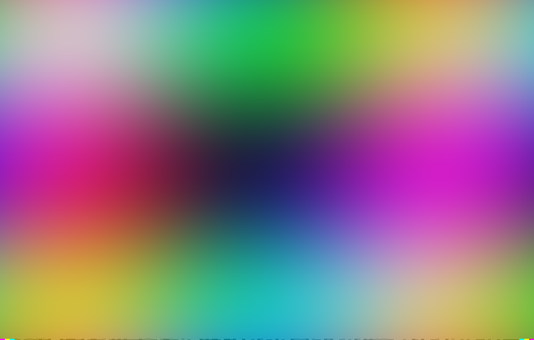
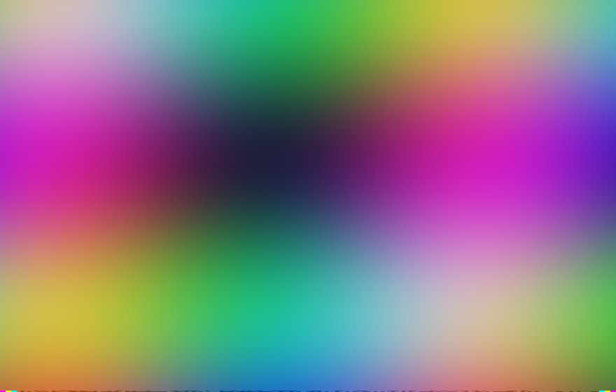
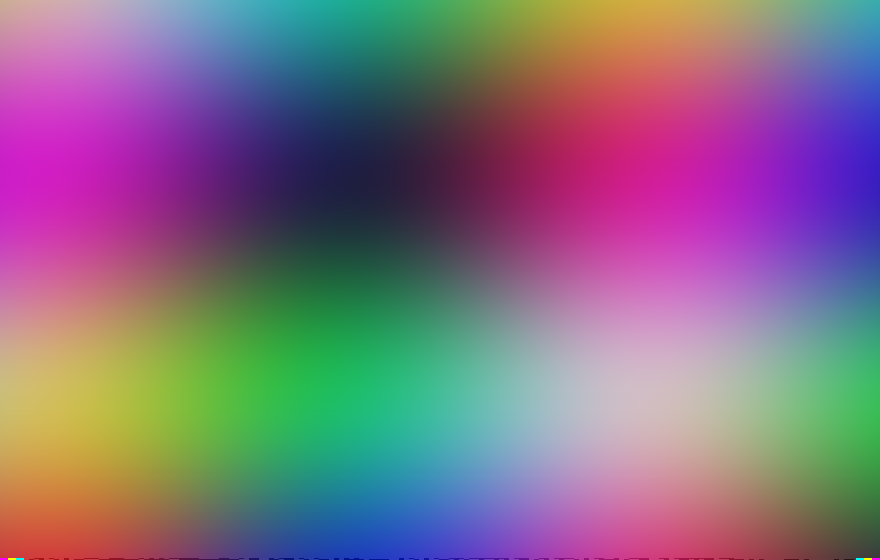
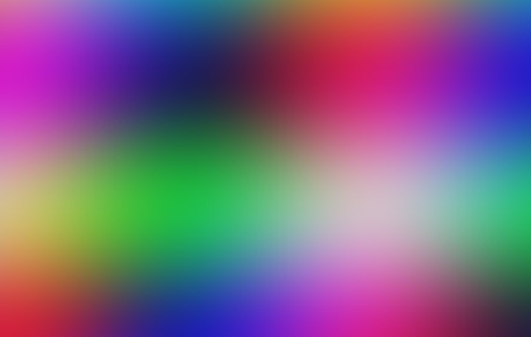
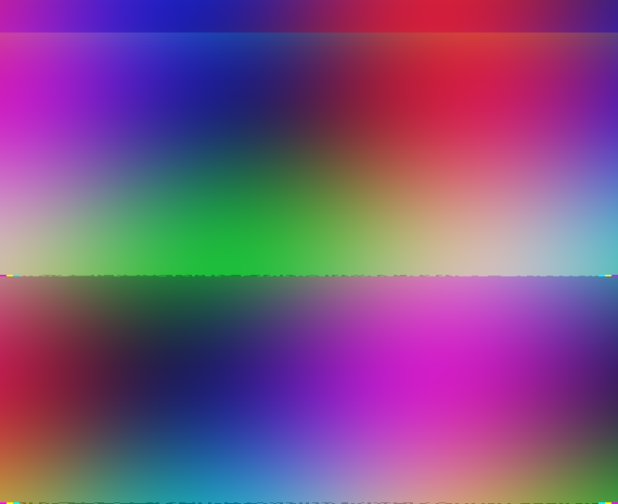
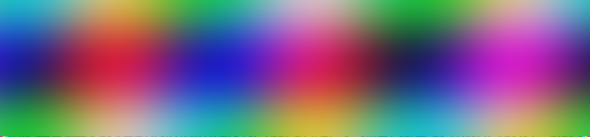
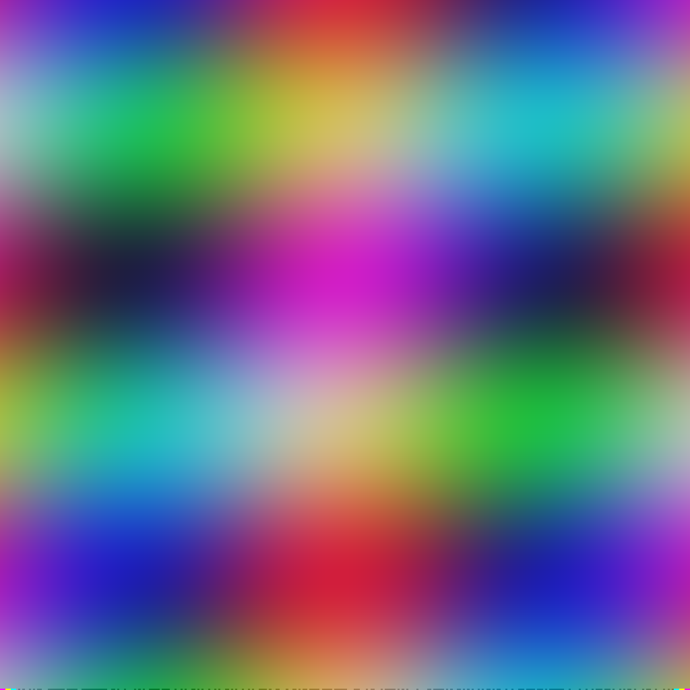
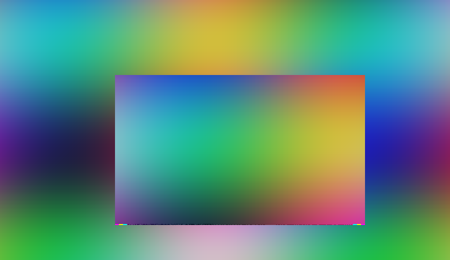
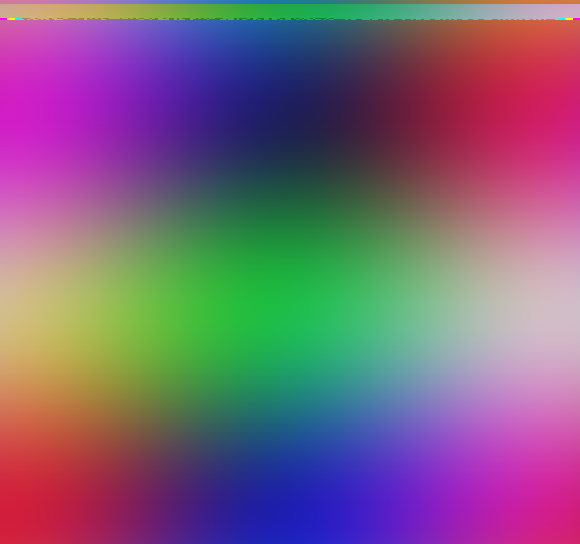

want: marker appears when the real src arrives.
want: none on plain; appears after swapping to a barred image; and back.
want: a markered image appears below.
Every scenario in one place, for eyeballing. Load the extension
unpacked, open its popup, set Record source to http://localhost:8017/records and
Markers: always. Green notes are what to expect; amber notes are known gaps.
want: a marker per bar; click to verify (VERIFIED / ALTERED / UNSUPPORTED). №4 no bar. №5 two bars.





want: marker on the rendered image's barrier, inset from the black element edge.
want: each image's marker(s) on its own rendered barrier.
want: the marker follows the image, never sits in the empty margin.

want: marker on the barrier both axes — the server hands the SW a 768px copy, the page a 1024px one.

want: marker on the bar's actual barrier inside the canvas (x 230..730 of 900), not the corner.

want: bar is high in the frame, so the marker sits BELOW it and slides down — never clips off the top.

Press the buttons and watch. A stale card/marker should also update on a swap.
want: both markered too — a <canvas> is re-encoded for the SW; a background-image is fetched by its URL.